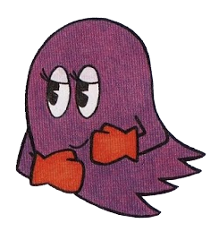

Sue
Sue (スー Suu) is a female ghost from the Pac-Man series, commonly shown as being purple (but is orange in some other appearances).
Characteristics
Appearance
Sue originally appears as an orange ghost in Ms. Pac-Man, as a female counterpart to Clyde. She is later depicted as a violet ghost, based on the animated series version. Unlike the other ghosts, Sue often appears to have narrow eyes and eyeshadow, presumably to express her gender.
Personality
Sue is never given a defined personality, though the animated series depicted her as somewhat sly - but like the other ghost monsters, she has an extreme lack of intelligence. In several Pac-Man games, Sue is one of the more aggressive ghosts chasing after Pac-Man, particularly in Pac-Mania.